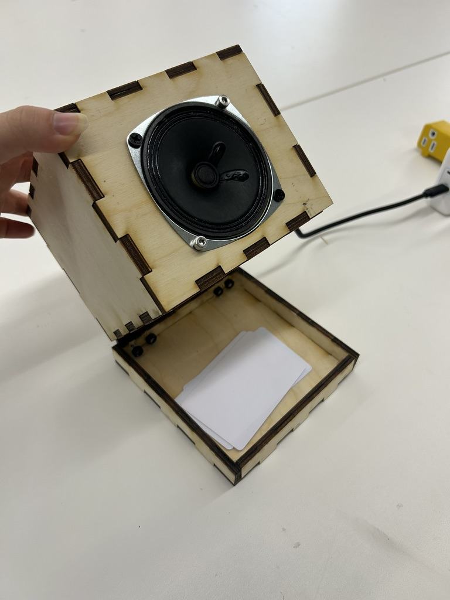
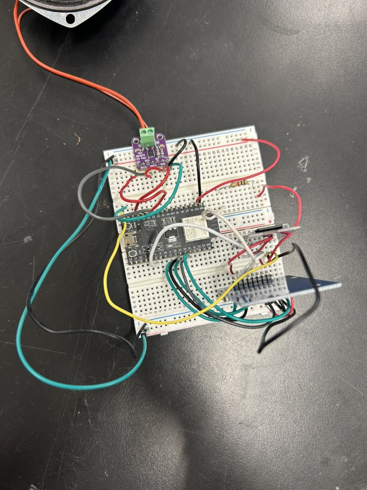

<div class="textcontainer">
<p class="margin"> </p>
<h3>Week 7: Minimum Viable Product (MVP)</h3>
<p class="margin"> </p>
<video width="100%" height="auto" controls>
<source src="IMG_3302.mp4" type="video/mp4">
Your browser does not support the video tag.
</video>
<h4>The Assignment</h4>
<p>This week’s goal was to build a <b>Minimum Viable Product (MVP)</b> of my final project. I focused on the most intimidating technical hurdle: integrating an RFID reader, a microSD card module, and an I2S audio amplifier to play specific sounds when a card is tapped. Then, in preparation for the project demo, I also made a box for it.</p>
<p class="margin"> </p>
<h4>Concept: Contactless Audio Messenger</h4>
<p></p></img>
<p>My final project is a "Contactless Audio Player." Because I'm a sentimental senior and wanted to leave PS70 with a meaningful gift, I decided to make a device that allows me to play recorded messages from friends. This week, I successfully integrated the core "stack": tapping an RFID card triggers the ESP32 to pull a specific WAV file from the SD card and stream it through the I2S amplifier to a speaker. </p>
<p class="margin"> </p>
<h4>System Architecture & Electronics</h4>
<p>The system uses a shared <b>SPI bus</b> for the RFID reader and the SD card, which required careful pin management. </p>
<h5>Component List:</h5>
<ul>
<li><b>ESP32:</b> Microcontroller</li>
<li><b>RC522:</b> The RFID reader (allows cards to be tapped and mapped onto an audio file)</li>
<li><b>microSD Module:</b> Storing the WAV audio files</li>
<li><b>MAX98357A:</b> I2S Digital Audio Amplifier for the speaker</li>
<li><b>Speaker:</b> Plays the sound</li>
</ul>
<p></p>
<p class="margin"> </p>
<h4>Challenges & Reflections</h4>
<p>Integrating multiple communication protocols is super hard. I asked Tolu and Bobby for a lot of help, and watched a TON of YouTube videos. Luckily, I was able to get everything to work, but it was a lot of trial and error. The most challenging part was consistency--I was having a lot of trouble getting the audio to play reliably, so I ended up getting a solderable breadboard to fix it. It took quite literally 5 hours to solder all of it, but it did fix it! YAY!</p>
<p class="margin"> </p>
<h4>Final Outcome & Moving Forward</h4>
<p>I’m incredibly proud that I got three different communication protocols (SPI for RFID, SPI for SD, and I2S for Audio) to play nicely together on one ESP32. I'm super excited to see where this goes and feel like I've made really good progress. Hopefully my demo goes well on Tuesday!! </p>
<p><b>Next steps:</b>
<ul>
<li>Add an OLED screen for UI feedback.</li>
<li>Integrate a volume knob (potentiometer).</li>
<li>Design a laser-cut or 3D-printed enclosure to hide the "spaghetti" of wires.</li>
</ul>
</p>
</div>